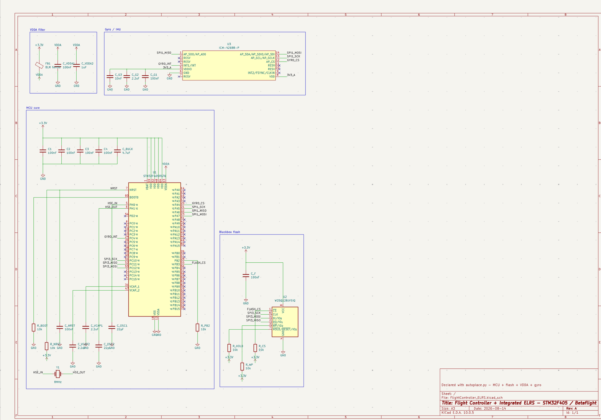

ELRS Flight Controller
KiCad · STM32F405 · ExpressLRS · Betaflight
A four-layer flight controller for a 5-inch quadcopter, with a 2.4 GHz ExpressLRS receiver built right onto the board instead of hanging off it as a separate module.
Why this one
I want to build a full drone at some point, so I started with the brains of it: a flight controller with the sensors and the radio on one board. It's built around an STM32F405 running Betaflight, with an ICM-42688-P gyro, a blackbox flash chip for logging, and its own power tree that takes up to a 6S battery.

First RF, first four layers
This one was a big step up for me. It's my first four-layer board, so I got to learn what the extra planes actually get you and get comfortable routing with them.
It's also my first real RF design. Having the receiver on the board meant the antenna match and the RF layout were on me to get right. It was the first time I designed to a controlled target impedance, instead of just routing it and hoping it works, which I could get away with on USB 2.0 full-speed.